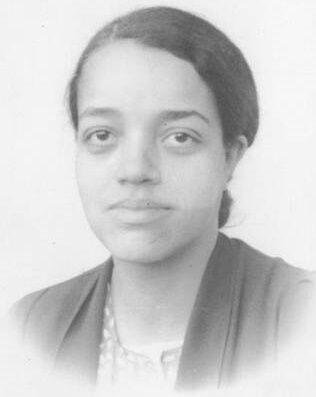
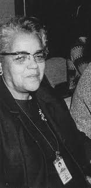
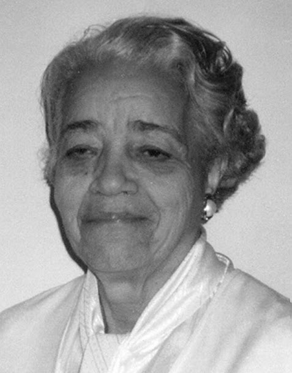

Dorothy Johnson Vaughan (Kansas City, 20 de setembro de 1910 — Hampton, 10 de novembro de 2008), foi uma matemática estadunidense, que trabalhou na National Advisory Committee for Aeronautics (NACA), a agência predecessora da NASA. Em 1949, ela foi a primeira mulher negra a ser promovida chefe de departamento na NASA.
Nascida Dorothy Johnson, em Kansas City, Missouri, era filha de Annie e Leonard Johnson. Quando era adolescente, a família se mudou para Morgantown, Virgínia Ocidental, formando-se no ensino médio em 1925, entrou na Universidade Wilberforce, em Ohio em 1929.
Tornou-se professora para auxiliar a família, abandonando o sonho de fazer mestrado, durante a Grande Depressão. Casou-se em 1932, com Howard Vaughan e tiveram quatro filhos
Para ganhar algum dinheiro durante as férias e aumentar a renda da família, Dorothy começou a trabalhar na lavanderia de um quartel durante a Segunda Guerra Mundial. Foi nessa época que viu vagas abertas para gente com formação em matemática para o Langley Research Center, especializando-se em rotas de voo, Projeto Scout, e programação FORTRAN.
A Ordem Executiva 8802 proibia a discriminação racial na indústria de defesa nos Estados Unidos, o que permitiu a contratação de negros para os órgãos federais, sem discriminação de cor, ao menos no papel.
Foi esta ordem que possibilitou a contratação de dezenas de profissionais negros para agências como a NACA e foi ela quem possibilitou a contratação de Dorothy, em 1943.
Uma vez contratada, ela foi designada para a West Area Computers, uma área segregada da instalação, com mulheres negras com formação em matemática, cujos cálculos foram usados em projetos espaciais e de aviação.
A área era segregada, mesmo que uma lei federal impedisse a segregação. Um cartaz na cafeteria da instalação foi removido diversas vezes, que designava uma mesa apenas para negros, até que a placa não foi mais recolocada.
Em 1949, ela se tornou chefe da West Area Computers, um grupo de trabalho composto inteiramente de mulheres negras e matemáticas. Essa promoção a tornou a primeira supervisora negra na NASA, uma das poucas mulheres, em uma época em que o racismo era explícito no país.
Como líder da equipe, ela instruiu novos conceitos aos funcionários, tanto os novos quanto os já existentes. A matemática Katherine Johnson foi designada para o grupo de Dorothy antes de ser transferida para o Langley's Flight Research Division. Em uma entrevista em 1994, ela relembrou os tempos em que trabalhou em Langley na Era Espacial e que sentia que "trabalhava no limite de algo muito excitante".
Dorothy lembra do trabalho: "Eu mudava o que podia e o que não podia, eu suportava".
Dorothy continuou em Langley depois da NACA se tornar NASA, se especializando em computação e em programação FORTRAN. Trabalhou nos centros de pesquisa e análise computacional de Langley, participando dos testes do Projeto Scout (Solid Controlled Orbital Utility Test system) na Wallops Flight Facility.
